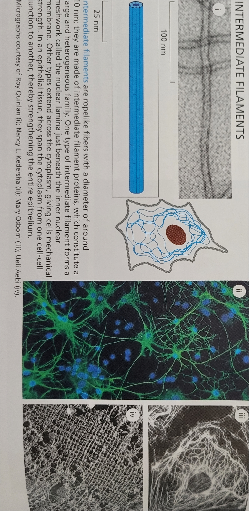
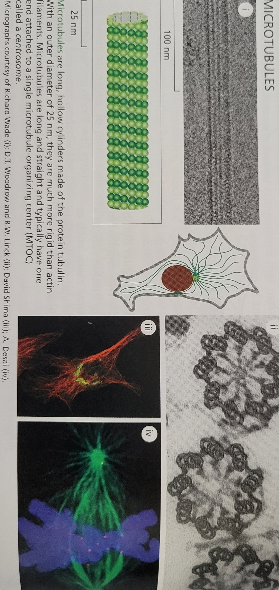
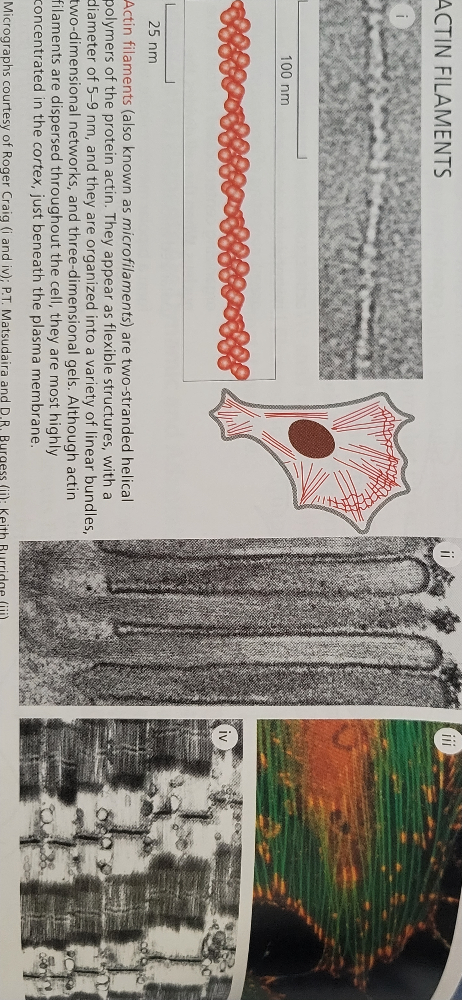
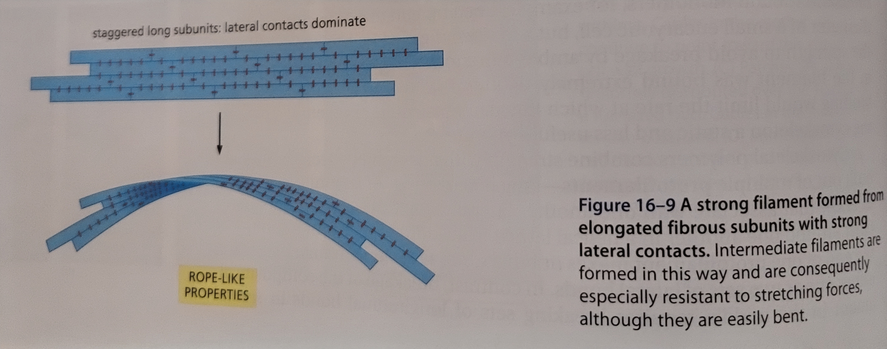
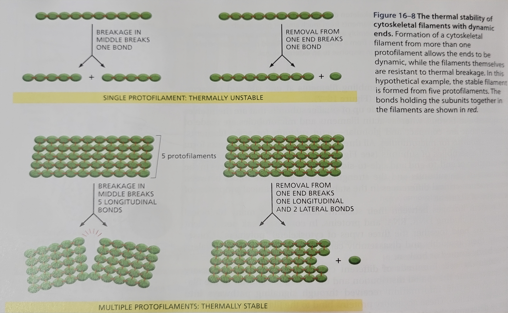
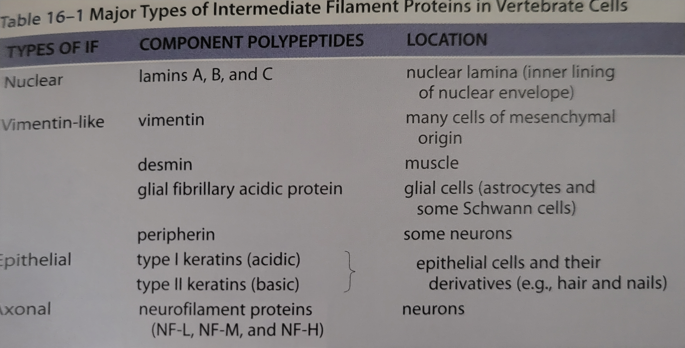
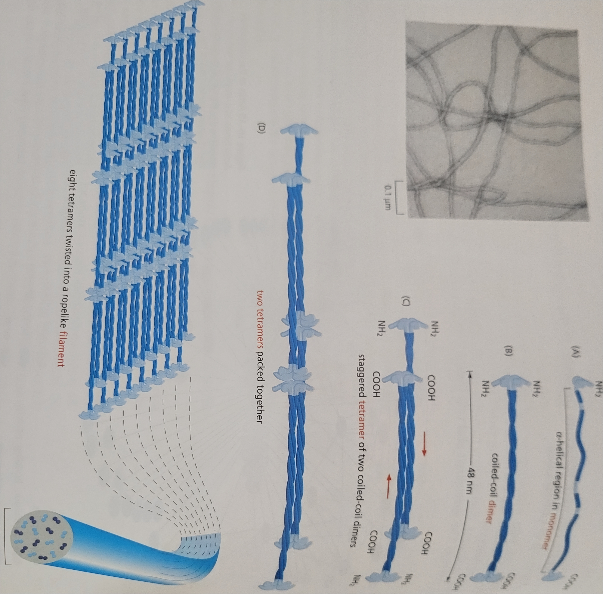

Lesson 13: Intro to the Cytoskeleton
The Cytoskeleton
The cytoskeleton functions to ensure that the cell is correctly shaped, physically robust, and properly structured internally.
The self-assembly and dynamic…
The three types of cytoskelelton filaments and their functions are:
Intermediate filaments - provide mechanical strength
Microtubules - determine the positions of membrane enclosed organelles and direct intracellular transport
Actin filaments - determine the shape of the cell’s surface and are necessary for whole-cell locomotion
Accessory proteins are proteins that assist in the controlled assembly of the cytoskeletal filaments in particular locations. A subset of accessory proteins are motor proteins which convert ATP into mechanical force.
Cytoskeletal filaments are dynamic and adaptable
The macromolecular components that make up larger cytoskeletal structures are in a constant state flux. This allows these structures rearrange quickly without requiring much energy.
  
The cytoskeleton can also form stable structures
Stable cytoskeletal structure still maintain their dynamic components. The individual filaments are continuously replaced and remodeled.
Cellular polarity is the difference in shape and structure that can occur on the separate sides of a cell to differentiate top or bottom, or front or back. In the case of intestinal epithelial cells the cytoskeleton forms polarities to separate the nutrient absorbing apical surface and the basolateral surface that distributes nutrients into the blood stream.

Each type of cytoskeletal filament
The small subunits that cytoskeletal filaments are made of are advantitous because their small size allows them to diffuse easily through the cytoplasm.
Intermediate filaments are made of subunits that are long and fiberous. Actin and tublin subunits are compact and globular.
All cytoskeletal filaments form helical assemblies of subunits that self-assemble. These assemblies are held together by noncovalent interactions with combinations of end-to-end and side-to-side protein contacts.
Accessory proteins bind to the filaments or their subunits to do the following:
determine the site of assembly for new filaments
regulate the partitioning of polymer proteins between filament and subunit forms
change the kinetics of filament assembly or disassembly
harness energy to generate force
link filaments to one another or to other cell structures
Filaments formed from multiple protofilaments…
Protofilaments are long linear strings of subunits joined end-to-end. Filaments are made of protofilaments associated with each other laterally. This is advantageous because addition or loss of a single subunit only requires the making/breaking of one longitudinal set of bonds and one or two lateral bonds compared to the several longitudinal bonds on multiple sets of protofilaments required to make or break a section of filament. This also make the ends of the filament the most dynamic point since they are the location off added and dropped protofilaments.
Thermal breakages are breaks in a filament that occur from ambient thermal energy within the cell.
Intermediate filaments are more resistant to twisting than microtubules because they are made up of long staggered protofilaments that for a rope like structure.
 
Intermediate filament structure depends…
Cytoplasmic intermediate filaments are most common in vertebrates, nematodes, and mollusks. This is because these organisms are “squishy” so they require cell types that can tolerate more mechanical stress.
Nuclear lamins are filaments that form a mesh work lining in the nuclear envelope of the cell giving it shape and providing an anchor point for chromosomes and nuclear pores. Nuclear lamin genes have duplicated in cell so that they now form as intermediate filaments in the rest of the cell.
The polypeptides that make a IF subunit are elongated molecules with an extended \(\alpha\)-helical domain that form a parallel coiled-coil with another monomer.
IFs do not bind with nucleoside triphosphates (ATP/GTP). IF assembly/disassembly is regulated by phosphorylation.
 
Intermediate filaments impart mechanical stability…
IFs come in more vareities than actins or microtubules.
Keratins are the most diverse IF family. They provide structure for epithelial cells, hair and nails.
Neurofilaments are another type of IFs. They provide structure for axons and help to carry electrical signals.
A protein complex containing…
Explain what nucleating is.
Explain the relationship between MTOC, gamma-tubulin, and the gamma tubulin ring complex.
Microtubules emanate from the centrosome
- Explain the relationship between the centrosome and the MTOC?
- What are centrioles?
- Explain how the dynamics of MTs change when they are nucleated from a centrosome.
- How does the centrosome contribute to organelle positioning?
Actin Filaments are often nucleated…
- What is the cell cortex?
- Where is most actin nucleated?
- What are microvilli, filopodia, and lamellipodia?
- What does the ARP complex do, and how does actin grow from it?
- How does ARP help create an actin web?
- What is the leading edge of a migrating cell?
| Microtubules | Actin | Intermediate Filaments | |
| Subunit Structure | \(\alpha\) / \(\beta\) - tubulin (globular) | g-actin (globular) | keratin, nuclear lamin, neurofilament, etc (fibrous) |
| Protofilament | 13 (end to end) | 2 (end to end) | 32 (end to end, side to side) |
| Does it have Polarity? | yes | yes | No |
| Structure of polymer | tube/pipe | double strand | rope |
| Nucleotide binding | GTP | ATP | none |
| Persistence length | ~ 10 \(\mu\)m | 2 - 3 mm | < 1 \(\mu\)m |
| Function |
|
|
|